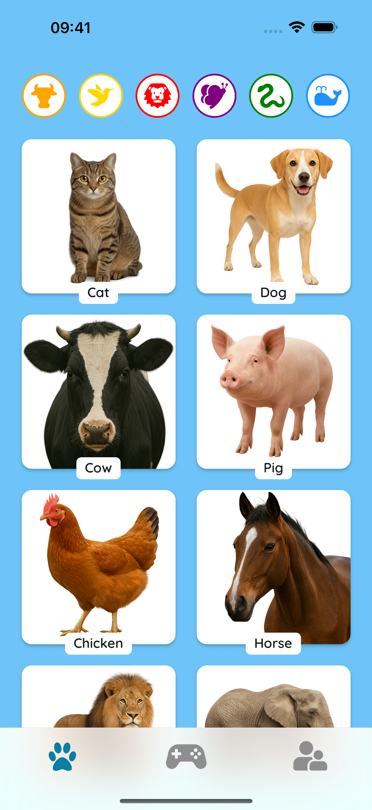
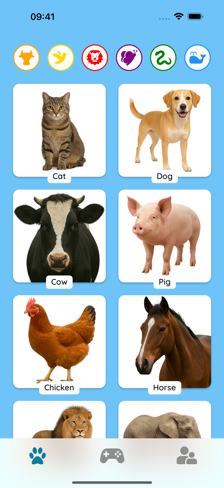

Ucz si Suchajc
Dotknij zwierzt, aby usysze prawdziwe d藕wiki. Idealne do wczesnego rozwoju mowy, pamici i zabawnych chwil rodzinnych!
 

Baw si i Zgaduj
Suchaj uważnie i wybierz waciwe zwierz! Prosty tryb quizu pomaga dzieciom nauczy si rozpoznawa d藕wiki i atwo zapamitywa zwierzta.


Bezpieczne i Przyjazne Dzieciom
Bez reklam. Bez ledzenia. Tylko kolorowe zwierzta, przyjazne d藕wiki i szczliwy czas nauki razem.